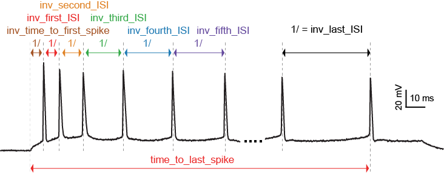
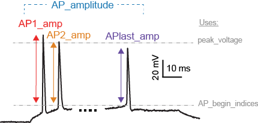

eFeature descriptions¶
A pdf document describing the eFeatures is available here.
Not every eFeature has a description in this document yet, the complete set will be available shortly.
Implemented eFeatures (to be continued)¶
Spike event features¶
LibV5 : inv_time_to_first_spike
1.0 over time to first spike; returns 0 when no spike
Required features: time_to_first_spike
Units: Hz
Pseudocode:
if len(time_to_first_spike) > 0: inv_time_to_first_spike = 1.0 / time_to_first_spike[0] else: inv_time_to_first_spike = 0
LibV5 : inv_first_ISI, inv_second_ISI, inv_third_ISI, inv_fourth_ISI, inv_fith_ISI, inv_last_ISI
1.0 over first/second/third/fourth/fith/last ISI; returns 0 when no ISI
Required features: peak_time (ms)
Units: Hz
Pseudocode:
all_isi_values_vec = numpy.diff(peak_time) if len(all_isi_values_vec) > 1: inv_first_ISI = 1000.0 / all_isi_values_vec[0] else: inv_first_ISI = 0 if len(all_isi_values_vec) > 0: inv_first_ISI = 1000.0 / all_isi_values_vec[0] else: inv_first_ISI = 0 if len(all_isi_values_vec) > 1: inv_second_ISI = 1000.0 / all_isi_values_vec[1] else: inv_second_ISI = 0 if len(all_isi_values_vec) > 2: inv_third_ISI = 1000.0 / all_isi_values_vec[2] else: inv_third_ISI = 0 if len(all_isi_values_vec) > 3: inv_fourth_ISI = 1000.0 / all_isi_values_vec[3] else: inv_fourth_ISI = 0 if len(all_isi_values_vec) > 4: inv_fifth_ISI = 1000.0 / all_isi_values_vec[4] else: inv_fifth_ISI = 0 if len(all_isi_values_vec) > 0: inv_last_ISI = 1000.0 / all_isi_values_vec[-1] else: inv_last_ISI = 0
LibV5 : time_to_last_spike
time from stimulus start to last spike
Required features: peak_time (ms), stimstart (ms)
Units: ms
Pseudocode:
if len(peak_time) > 0: time_to_last_spike = peak_time[-1] - stimstart else: time_to_last_spike = 0
LibV1 : Spikecount
number of spikes in the trace
Required features: LibV1:peak_indices
Units: constant
Pseudocode:
Spikecount = len(peak_indices)
LibV5 : number_initial_spikes
number of spikes at the beginning of the stimulus
Required features: LibV1:peak_time
Required parameters: initial_perc (default=0.1)
Units: constant
Pseudocode:
initial_length = (stimend - stimstart) * initial_perc number_initial_spikes = len(numpy.where( \ (peak_time >= stimstart) & \ (peak_time <= stimstart + initial_length)))
Spike shape features¶
LibV1 : AP_Amplitude, AP1_amp, AP2_amp, APlast_amp
The relative height of the action potential from spike onset
Required features: LibV5:AP_begin_indices, LibV1:peak_voltage (mV)
Units: mV
Pseudocode:
AP_Amplitude = voltage[AP_begin_indices] - peak_voltage AP1_amp = AP_Amplitude[0] AP2_amp = AP_Amplitude[1] APlast_amp = AP_Amplitude[-1]

LibV1 : AHP_depth
Relative voltage values at the first after-hyperpolarization
Required features: LibV1:voltage_base (mV), LibV5:min_AHP_values (mV)
Units: mV
Pseudocode:
min_AHP_values = first_min_element(voltage, peak_indices) AHP_depth = min_AHP_values[:] - voltage_base
LibV5 : AHP_time_from_peak
Time between AP peaks and first AHP depths
Required features: LibV1:peak_indices, LibV5:min_AHP_values (mV)
Units: mV
Pseudocode:
min_AHP_indices = first_min_element(voltage, peak_indices) AHP_time_from_peak = t[min_AHP_indices[:]] - t[peak_indices[i]]

LibV2 : AP_duration_half_width
Width of spike at half spike amplitude
Required features: LibV2: AP_rise_indices, LibV2: AP_fall_indices
Units: ms
Pseudocode:
AP_rise_indices = index_before_peak((v(peak_indices) - v(AP_begin_indices)) / 2) AP_fall_indices = index_after_peak((v(peak_indices) - v(AP_begin_indices)) / 2) AP_duration_half_width = t(AP_fall_indices) - t(AP_rise_indices)
Voltage features¶

LibV5 : steady_state_voltage_stimend
The average voltage during the last 10% of the stimulus duration.
Required features: t, V, stim_start, stim_end
Units: mV
Pseudocode:
stim_duration = stim_end - stim_start begin_time = stim_end - 0.1 * stim_duration end_time = stim_end steady_state_voltage_stimend = numpy.mean(voltage[numpy.where((t < end_time) & (t >= begin_time))])
LibV1 : steady_state_voltage
The average voltage after the stimulus
Required features: t, V, stim_end
Units: mV
Pseudocode:
steady_state_voltage = numpy.mean(voltage[numpy.where((t <= max(t)) & (t > stim_end))])
LibV5 : voltage_base
The average voltage during the last 10% of time before the stimulus.
Required features: t, V, stim_start, stim_end
- Parameters: voltage_base_start_perc (default = 0.9)
voltage_base_end_perc (default = 1.0)
Units: mV
Pseudocode:
voltage_base = numpy.mean(voltage[numpy.where( (t >= voltage_base_start_perc * stim_start) & (t <= voltage_base_end_perc * stim_start))])
LibV5 : decay_time_constant_after_stim
The decay time constant of the voltage right after the stimulus
Required features: t, V, stim_start, stim_end
- Parameters: decay_start_after_stim (default = 1.0 ms)
decay_end_after_stim (default = 10.0 ms)
Units: ms
Pseudocode:
time_interval = t[numpy.where(t => decay_start_after_stim & t < decay_end_after_stim)] - t[numpy.where(t == stim_end)] voltage_interval = abs(voltages[numpy.where(t => decay_start_after_stim & t < decay_end_after_stim)] - voltages[numpy.where(t == decay_start_after_stim)]) log_voltage_interval = numpy.log(voltage_interval) slope, _ = numpy.polyfit(time_interval, log_voltage_interval, 1) decay_time_constant_after_stim = -1. / slope
Requested eFeatures¶
LibV1 : AHP_depth_last
Relative voltage values at the last after-hyperpolarization
Required features: LibV1:voltage_base (mV), LibV5:last_AHP_values (mV)
Units: mV
Pseudocode:
last_AHP_values = last_min_element(voltage, peak_indices) AHP_depth = last_AHP_values[:] - voltage_base
LibV5 : AHP_time_from_peak_last
Time between AP peaks and last AHP depths
Required features: LibV1:peak_indices, LibV5:min_AHP_values (mV)
Units: mV
Pseudocode:
last_AHP_indices = last_min_element(voltage, peak_indices) AHP_time_from_peak_last = t[last_AHP_indices[:]] - t[peak_indices[i]]
LibV5 : steady_state_voltage_stimend_from_voltage_base
The average voltage during the last 90% of the stimulus duration realtive to voltage_base
Required features: LibV5: steady_state_voltage_stimend (mV), LibV5: voltage_base (mV)
Units: mV
Pseudocode:
steady_state_voltage_stimend_from_voltage_base = steady_state_voltage_stimend - voltage_base
LibV5 : min_duringstim The minimum voltage during stimulus
Required features:
Units: mV
Pseudocode:
min_duringstim = [numpy.min(voltage[numpy.where((t <= stim_end[0]) & (t >= stim_start[0]))])]
LibV5 : min_duringstim_from_voltage_base The minimum voltage during stimulus
Required features: LibV5: min_duringstim (mV), LibV5: voltage_base (mV)
Units: mV
Pseudocode:
min_duringstim_from_voltage_base = min_duringstim - voltage_base
LibV5 : max_duringstim The minimum voltage during stimulus
Required features:
Units: mV
Pseudocode:
min_duringstim = [numpy.max(voltage[numpy.where((t <= stim_end[0]) & (t >= stim_start[0]))])]
LibV5 : max_duringstim_from_voltage_base The minimum voltage during stimulus
Required features: LibV5: max_duringstim (mV), LibV5: voltage_base (mV)
Units: mV
Pseudocode:
max_duringstim_from_voltage_base = max_duringstim - voltage_base
LibV5 : diff_max_duringstim Difference between maximum and steady state during stimulation
Required features: LibV5: max_duringstim (mV), LibV5: steady_state_voltage_stimend (mV)
Units: mV
Pseudocode:
diff_max_duringstim: max_duringstim - steady_state_voltage_stimend
LibV5 : diff_min_duringstim Difference between minimum and steady state during stimulation
Required features: LibV5: min_duringstim (mV), LibV5: steady_state_voltage_stimend (mV)
Units: mV
Pseudocode:
diff_min_duringstim: min_duringstim - steady_state_voltage_stimend